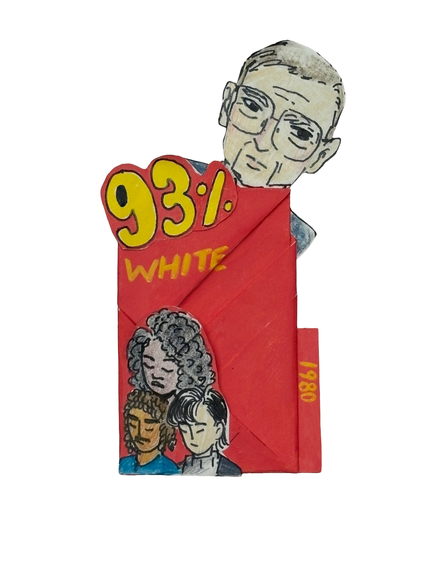

In the '80s, StuyTown sat in a transitional phase where the original post-war generation of veterans and young families were aging. Those young families and children from the '40s and '50s were now much older, shifting the community from being dominated by young kids to a rapidly aging long term resident population. There was also a household shift, where there were more single or older adult households. StuyTown still stayed overwhelmingly White, though they did begin to diversify a little more. White residents made up around 93%, whereas Black, Hispanic, and Asian combined only came out to roughly 7%.